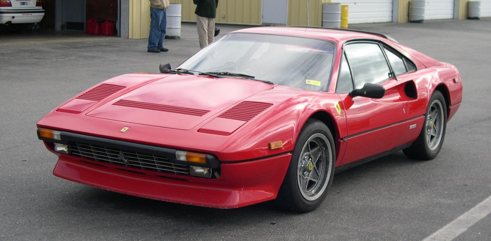

Ferrari 308 GTB/GTS (и аналогичные 208, а позже 328) — спортивная машина с центральным расположение двигателя производилась итальянской компанией Ferrari в 1970—1980-х годов. Являлась одной из наиболее доступных моделей в производимых линиях компании. 308-я заменила Dino 246 в 1975 году и оставалась в производственной программе компании до 1985 года, после чего была заменена на модернизированный вариант под обозначением 328.
 Back